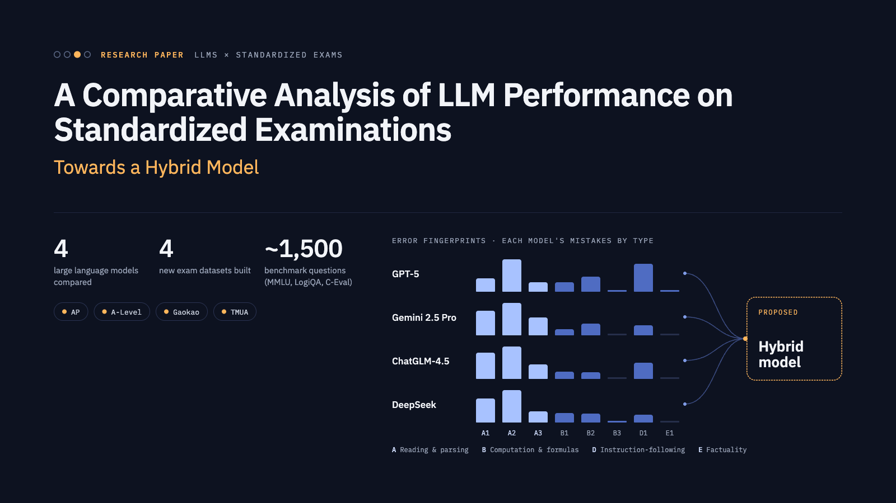

LLM Performance on Standardized Examinations
Compared four language models on approximately 1,500 benchmark questions and custom AP, A-Level, Gaokao, and TMUA exam datasets. Prompt tests, full-paper simulations, and a six-part error analysis show where strong scores still hide reading, reasoning, and calculation failures—and motivate a future hybrid-model design.